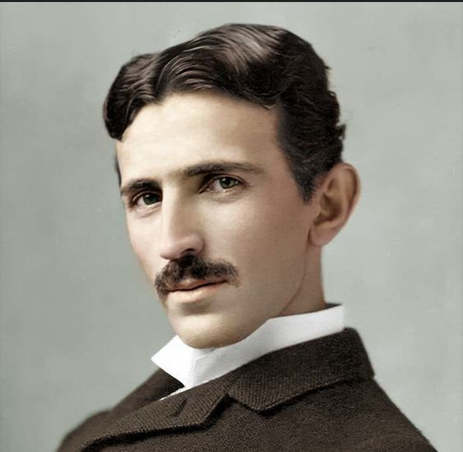

Nikola Tesla
1856 - 1943
About
- Nikola Tesla (1856–1943) was a Serbian-American inventor, engineer, and futurist best known for developing alternating current (AC) electricity systems. Renowned for his visionary ideas, he invented the Tesla coil, contributed to wireless communication, and held over 300 patents. Though underappreciated in his time, Tesla's innovations revolutionized modern technology and continue to inspire advancements today
Interesting Facts
- Tesla claimed he conceived the idea for his alternating current (AC) motor during a vision while walking in a park.
- Tesla had a photographic memory and could visualize entire inventions in his mind before building them.
- Tesla loved pigeons and spent considerable time and resources caring for them in his later years, considering one particular white pigeon his close companion.
- The FBI seized Tesla’s research papers after his death, fueling conspiracy theories about secret inventions like a "death ray."
- He was fluent in 8 languages, including Serbian, English, German, French, and Italian.
Contributions/Inventions
- Alternating Current (AC): Tesla revolutionized electrical systems by developing AC, which became the standard for power transmission.
- Tesla Coil: Invented in 1891, the Tesla coil is a high-frequency transformer still used in radio technology and experiments with wireless energy.
- Wireless Power and Communication: Tesla envisioned transmitting electricity wirelessly. His experiments at Wardenclyffe Tower were groundbreaking but left incomplete due to funding issues.
- Radio and Remote Control: Tesla demonstrated the first remote-controlled boat in 1898, laying the groundwork for modern remote-controlled systems.
- Oscillators and Vibrators: Designed mechanical and electrical oscillators for generating consistent frequencies.
- Other Innovations: He contributed to X-ray technology, neon lighting, and the foundation of radar systems.